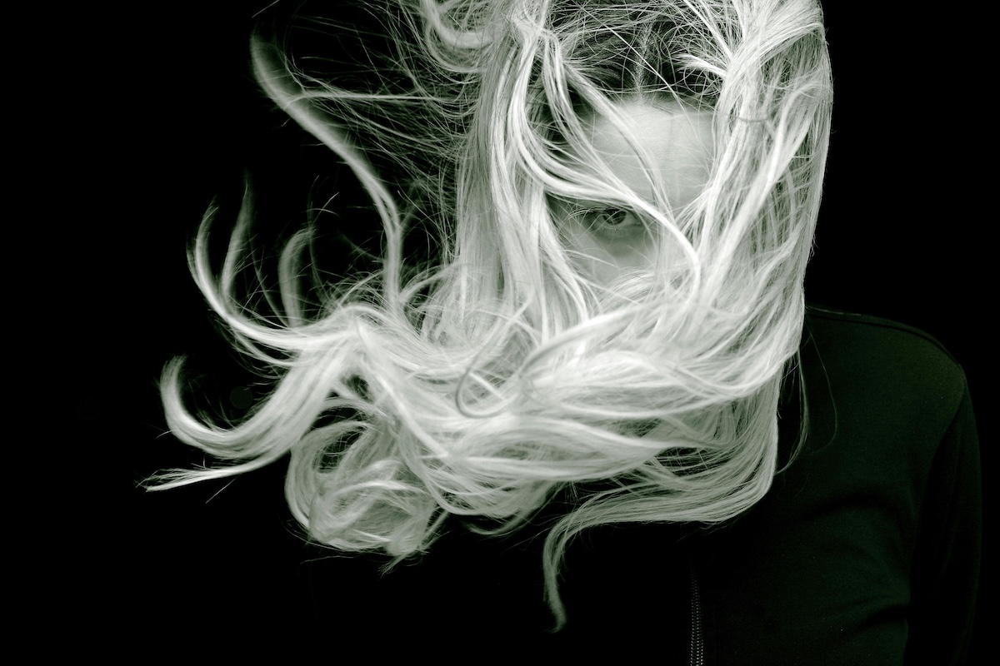

Rüyada Saçların Beyazladığını Görmek Ne Anlama Gelir?
Rüyalar, bilinçaltımızın ve iç dünyamızın bir yansıması olarak hayatımızda önemli bir yer tutar. Rüyada saçların beyazladığını görmek de sıklıkla merak edilen ve çeşitli anlamlara yorulan bir durumdur. Peki, rüyada saç beyazlaması neyi ifade eder? İşte detaylı yorumu.
Bilgelik ve Olgunluk
Saç beyazlaması, genellikle yaşlanmanın ve deneyim kazanmanın bir simgesidir. Rüyada saçların beyazladığını görmek, hayat tecrübesi kazandığınıza, bilgelik ve olgunluk yolunda ilerlediğinize işaret edebilir. Özellikle kendinizi daha sabırlı, anlayışlı ve olgun hissettiğiniz bir dönemdeyseniz, bu rüya sizin gelişiminizi simgeliyor olabilir.
Stres ve Kaygılar
Gündelik hayatın getirdiği stres, kaygı ve sorumluluklar bilinçaltımıza rüyalar yoluyla yansıyabilir. Saçların aniden beyazlaması, yoğun stres altında olduğunuzun ve hayatınızda büyük bir baskı hissettiğinizin bir göstergesi olabilir. Eğer iş hayatınızda veya özel yaşamınızda büyük bir sorumluluk üstlendiyseniz, bu rüya zihninizin sizi uyarma şekli olabilir.
Değişim ve Yenilenme
Beyaz saç bazen yeni bir döneme girmenin, köklü değişikliklerin habercisi olabilir. Geçmişteki bir dönemin sona erdiğini ve yeni bir sürecin başladığının farkında olmanız gerektiğine işaret edebilir. Örneğin, hayatınızda yeni bir işe başlamak, taşınmak veya kişisel bir dönüşüm sürecine girmek gibi büyük değişimler yaşıyorsanız, rüyanız bu değişime adapte olmanız gerektiğini söylüyor olabilir.
Sağlık ve Yaşlanma Korkusu
Bazı insanlar için beyaz saç, yaşlanmayla ilgili korkuları ve sağlık endişelerini temsil eder. Eğer bilinçaltınızda yaşlanma veya sağlık konularıyla ilgili endişeleriniz varsa, bu durum rüyanızda beyazlayan saçlar olarak ortaya çıkabilir. Sağlığınıza daha fazla dikkat etmeniz ve yaşam tarzınızı gözden geçirmeniz gerektiğine dair bilinçaltınızın bir mesajı olabilir.
Manevi Aydınlanma
Bazı rüya yorumcularına göre, beyaz saçlar ruhsal bir uyanışın ve manevi düzeyde ilerlemenin bir sembolü olabilir. Rüyada saçların beyazladığını görmek, farkındalığınızın arttığına ve hayata daha derin bir anlamla baktığınıza delalet edebilir. Eğer son zamanlarda kişisel gelişim, meditasyon veya ruhsal çalışmalarla ilgileniyorsanız, bu rüya içsel yolculuğunuzun bir yansıması olabilir.
Otorite ve Saygı
Toplumda beyaz saç genellikle bilgelik ve saygının bir ifadesi olarak görülür. Eğer rüyanızda saçlarınız beyazlıyorsa, bu durum çevrenizde daha fazla saygı gördüğünüze ya da otorite sahibi bir pozisyona geçmek üzere olduğunuza işaret edebilir. Özellikle iş hayatında veya aile içinde liderlik rolüne büründüyseniz, bu rüya bu değişimi kabullenmeniz gerektiğini belirtiyor olabilir.
Başarı ve Sorumluluk
Rüyada saçların beyazladığını görmek, bazı durumlarda kişinin büyük bir başarıya ulaşacağına da yorulabilir. Ancak bu başarının, büyük sorumluluklar ve fedakârlıklar gerektirdiğini de unutmamak gerekir. Eğer iş hayatınızda büyük bir hedefiniz varsa veya bir projeye liderlik ediyorsanız, bu rüya size bu süreçte dikkatli olmanız gerektiğini hatırlatıyor olabilir.
Geçmişin Yükü ve Dersler
Beyaz saçlar bazen geçmişin yükünü, alınan dersleri ve hayatın bize kattığı tecrübeleri simgeler. Rüyada saçların beyazladığını görmek, geçmişte yaşanan olaylardan ders çıkardığınızı ve artık daha bilinçli kararlar aldığınızı gösteriyor olabilir. Geçmişe dair bazı konuları hala kafanızda taşıyorsanız, bu rüya onları bırakmanız gerektiğine dair bir işaret olabilir.
Sonuç
Rüyada saçların beyazladığını görmek farklı anlamlara gelebilir ve yorumu kişinin hayatındaki duruma göre değişiklik gösterebilir. Eğer bu tür bir rüya gördüyseniz, yaşadığınız olaylara ve hislerinize göre kendi içsel yorumunuzu yapabilirsiniz. Rüyalarınızı dikkatle inceleyerek, bilinçaltınızın size vermek istediği mesajları anlamaya çalışabilirsiniz. Rüyalarınız rehberiniz olsun!